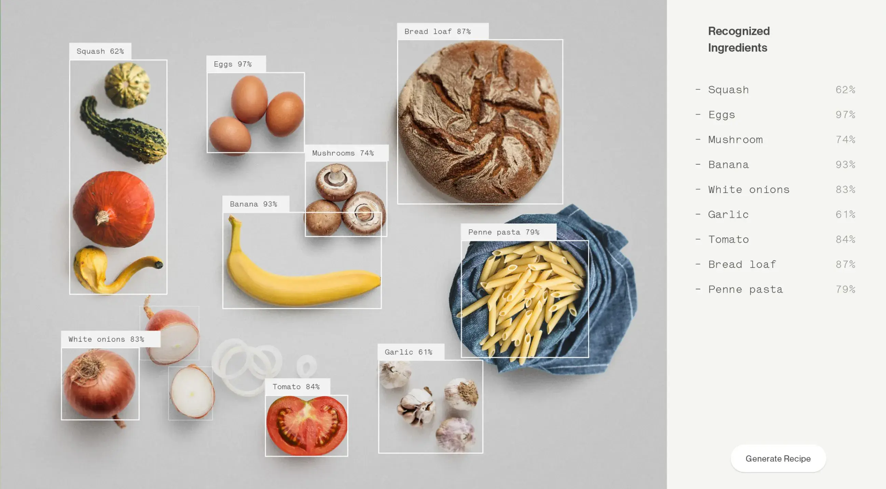
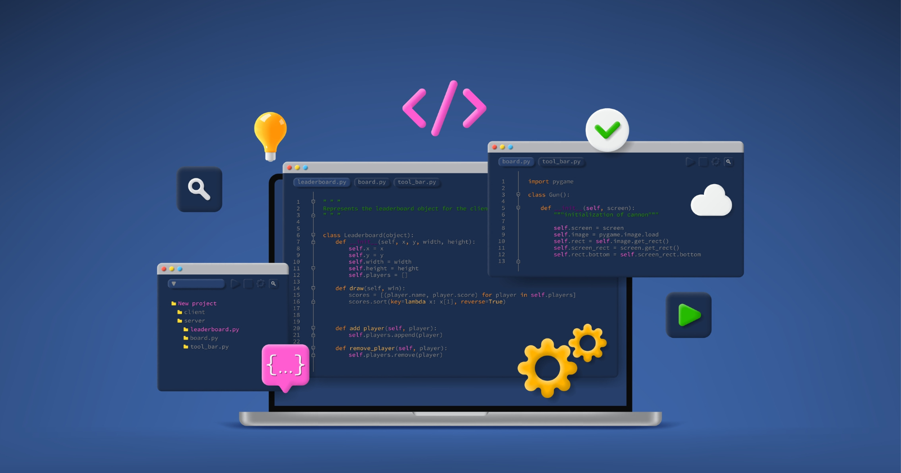

Hello, I am Harika Arimilli👋🏻
Software Engineer with experience in full-stack development and machine learning, building scalable web and AI-driven solutions.
About Me 👩💻
I started my tech journey as a backend engineer at Optum (UnitedHealth Group), where I modernized healthcare platforms by building scalable APIs, optimizing MySQL databases, and integrating automated testing pipelines to enhance system reliability.
Over the past two years, I’ve contributed to both startup and enterprise environments, working on impactful solutions in healthcare, AI, and full-stack development. My projects range from ML-powered platforms like DiaBeat to real-time sensor tracking apps and semantic web–based food recommendation systems.
🛠️ Tech I love working with: JavaScript, TypeScript, React, Node.js, Python, SQL/NoSQL, and cloud-native tools. I specialize in microservices, AI/ML pipelines, and intuitive web experiences that scale.

Skills 🚀
Programming Languages
- Python
- Java
- JavaScript
- TypeScript
Web Technologies
- React.js
- Next.js
- Node.js
- Spring Boot
- Flask
- Fast API
AI & Machine Learning
- TensorFlow
- PyTorch
- Hugging Face
- NumPy
- Pandas
- NLP
- RAG
Databases
- MySQL
- PostgreSQL
- MongoDB
Cloud & DevOps
- AWS (EC2, S3, Lambda, API Gateway)
- Docker
- Render
- Git
- Jenkins
Testing Frameworks
- Selenium
- JUnit
- Cucumber
Work Experience 👩💻
Optum Global Solutions
Software Engineer · Jul 2022 – Aug 2023 · Hyderabad, India
- Designed and deployed scalable low-latency backend systems with Java and Spring Boot, implementing RESTful APIs to automate EDI 837 parsing and transform XML/JSON data for seamless integration.
- Developed dynamic dashboards with Angular to monitor real-time claim statuses and error summaries from compliance teams, with backend data delivered through MySQL pipelines.
- Implemented JUnit tests for backend APIs and automated UI regression testing using Selenium and Cucumber to enhance coverage and reduce manual-effort by 30%.
- Collaborated with cross-functional teams in Agile environments to gather requirements and contribute to system design and implementation.
- Streamlined CI/CD workflows using Git and Jenkins to automate build, test, and deployment processes, reducing release cycles and deployment failures.
Mavoix Solutions Pvt LTD
Deep Learning Intern · December 2020- Aug 2021 · Remote
- Contributed to the development of DiaBeat, a deep learning–driven mobile application aimed at assisting individuals with Type-2 diabetes in health risk assessment and personalized self-management guidance.
- Built and trained neural network models using TensorFlow, optimizing architectures for structured health data to predict diabetes risk with high accuracy.
- Implemented data preprocessing pipelines, including normalization and feature selection, to enhance model performance and reliability.
- Developed and deployed Flask-based RESTful APIs to facilitate seamless integration between the machine learning models and the mobile application, enabling real-time risk assessments.
- Designed and managed MongoDB schemas for efficient storage and retrieval of patient data, ensuring scalability and data integrity.
Internship Studio
Machine Learning Intern · October 2021 – December 2021· Remote
- Trained classification models to predict customer churn using Scikit-learn and pandas.
- Performed feature engineering, encoding, and hyperparameter tuning using GridSearchCV.
- Deployed the trained model using Django REST Framework to demonstrate predictions via APIs.
- Delivered performance dashboards and insights to internal stakeholders.
Featured Projects
Real-Time UWB-Based Sensor Detection App
Built a cross-platform Flutter app with native Swift modules for real-time UWB based
sensor detection and proximity alerts,
using Express.js/Node.js REST APIs with MongoDB for spatial data management.

Ontology-Driven Food Recommendation Platform
Built a responsive Node.js / Next.js semantic-web app
leveraging a USDA-Food.com knowledge graph and SPARQL to analyze ingredients, compute
nutrition, and suggest healthier alternatives.

Cryptojacking Detection Using Time-Series Analysis
Designed a time-series machine learning model to identify cryptojacking attacks by
detecting irregular CPU usage trends from system activity logs.

End-to-End E-Commerce System
Built a full-stack e-commerce app with user authentication, product catalog, and cart.
Integrated React frontend with Spring Boot and PostgreSQL backend for secure data and
scalable APIs.

Deepfake Detection Leveraging Machine Learning and Computer Vision.
Developed a deepfake detection model using CNNs and temporal analysis, leveraging
PyTorch for accurate video classification.

AI-Driven TV Script Generator from Video Using Multimodal Transformers.
Built an AI-driven script generator with Streamlit and FastAPI that converts video
scenes into dialogues using Whisper for transcription and GPT via Hugging Face for
continuation.
Get in Touch
Whether it’s a project idea or just to say hi — feel free to reach out 😄
Real-Time UWB-Based Sensor Detection App
Built a cross-platform Flutter app with native Swift modules for real-time UWB based sensor detection and proximity alerts, using Express.js/Node.js REST APIs with MongoDB for spatial data management.
Ontology-Driven Food Recommendation Platform
Built a responsive Node.js / Next.js semantic-web app leveraging a USDA-Food.com knowledge graph and SPARQL to analyze ingredients, compute nutrition, and suggest healthier alternatives.
Cryptojacking Detection Using Time-Series Analysis
Designed a time-series machine learning model to identify cryptojacking attacks by detecting irregular CPU usage trends from system activity logs.
End-to-End E-Commerce System
Built a full-stack e-commerce app with user authentication, product catalog, and cart. Integrated React frontend with Spring Boot and PostgreSQL backend for secure data and scalable APIs.
Deepfake Detection Leveraging Machine Learning and Computer Vision.
Developed a deepfake detection model using CNNs and temporal analysis, leveraging PyTorch for accurate video classification.
AI-Driven TV Script Generator from Video Using Multimodal Transformers.
Built an AI-driven script generator with Streamlit and FastAPI that converts video scenes into dialogues using Whisper for transcription and GPT via Hugging Face for continuation.
Get in Touch
Whether it’s a project idea or just to say hi — feel free to reach out 😄